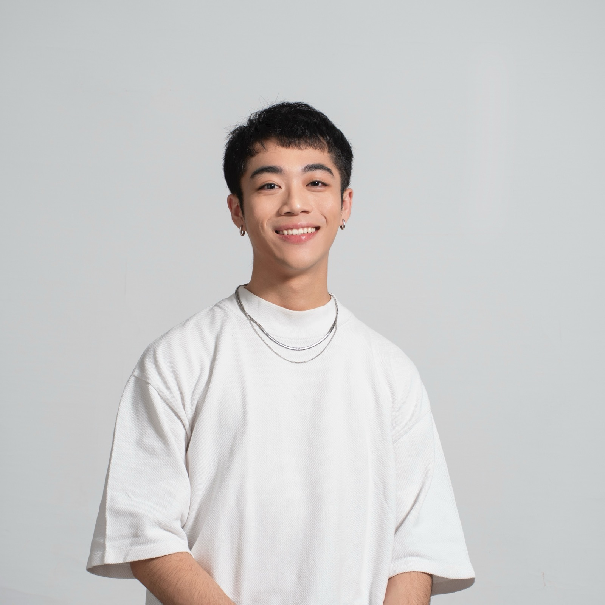

Shao-Yu Lin
Tyler — designing intelligent, human experiences.
UX and interaction designer with roots in industrial design and a current focus on Human–Computer Interaction. I bridge user research, strategic thinking, and AI-driven design to craft experiences that feel intelligent yet deeply human.
Selected Work · 2023 — 2025
Eight projects that
shaped how I design.
A mix of interaction, UI, and industrial design — spanning service concepts, exhibition installations, and speculative products. Each piece chased the same question: how can design feel intelligent and still stay human?


About
Design that feels intelligent yet deeply human.
I'm Tyler — a Taiwanese designer based in Munich, now studying Interactive Media Systems with an HCI focus at TH Augsburg. My path began in industrial design at Taiwan Tech, turned toward UX during a design exchange in Munich, and keeps leaning into the space where AI, interaction, and craft quietly meet.
Across Taiwan, Germany, and cross-cultural teams, I've worked the full arc of the design process — from user interviews and empathy mapping, through rapid prototyping, to production-ready UI and motion. I care about strategy as much as pixels: why something is made, and how it can feel effortless once it reaches someone.
Outside of projects, I like quiet trails, slow coffee, and the kind of objects that become friends over time.
Experience
Recent work experience
Three roles across Taiwan — from global marketing visuals at ViewSonic, to UX research at Pangolin, to UI for exhibition-scale installations with Lightfull Studio.
Toolkit
Fluent in research, pixels, and the bits in between.
Design
- Figma
- Framer
- Adobe CC
- Rhino
- KeyShot
- CAD
- 3D Printing
UX Methods
- User Research
- Usability Testing
- Empathy Mapping
- Personas
- Journey Mapping
- IA
- Prototyping
Development
- HTML
- CSS
- JavaScript
- AI-assisted Dev
Languages
- Mandarin — native
- English — C1
Let's make something
A calm conversation,
over coffee or over pixels.
Currently in Munich — open to full-time roles, freelance briefs, and interesting collaborations in UX, HCI, and AI-driven design.
shaoyu.tyler@gmail.com